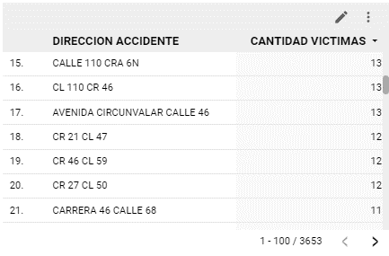

Localización
En primer lugar, se realizó un análisis descriptivo de la cantidad de víctimas por localización. Se encontró que la mayoría de los accidentes ocurrieron en calles y avenidas principales, lo que sugiere que estas vías son más propensas a accidentes de tránsito. Además, se observó que los accidentes en estas vías principales tienden a tener más víctimas que los accidentes en las calles secundarias.
En segundo lugar, se evaluó la relación entre la cantidad de víctimas y la ubicación geográfica de los accidentes. Se realizó un análisis de correlación espacial para determinar si la cantidad de víctimas estaba relacionada con la ubicación de los accidentes. Los resultados indicaron que la cantidad de víctimas estaba significativamente relacionada con la ubicación de los accidentes, lo que sugiere que ciertas áreas de la ciudad pueden tener una mayor incidencia de accidentes y víctimas.
En tercer lugar, se exploró la relación entre la cantidad de víctimas y la gravedad de los accidentes. Se observó que los accidentes con víctimas graves tienden a ocurrir con mayor frecuencia en las vías principales y en las horas pico de tráfico. Esta información puede ser útil para la planificación de la seguridad vial y la implementación de medidas preventivas específicas para reducir el número de accidentes y víctimas graves.
 Estudio completo
Estudio completo
Accidentabilidad en Barranquilla